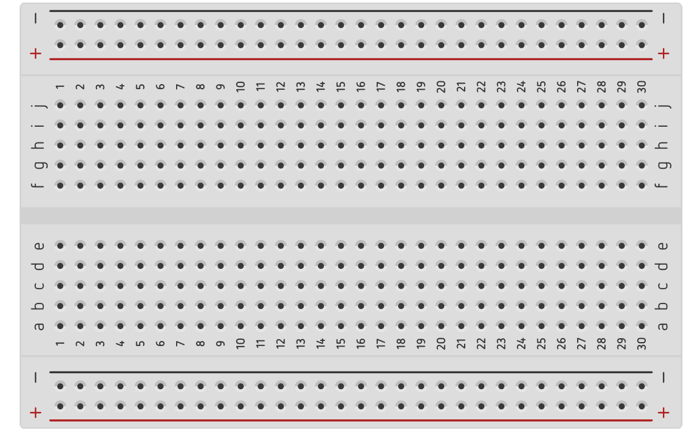
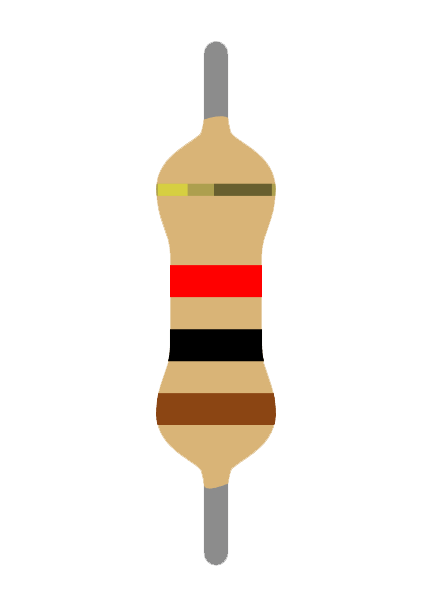
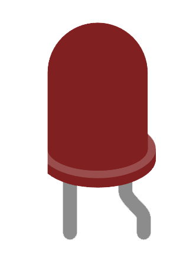

kRDM
Détecteur de feu et de gaz
composants
L'Arduino Uno est une carte de microcontrôleur populaire largement utilisée dans les projets d'électronique et de prototypage. Elle est basée sur le microcontrôleur ATmega328P d'Atmel et dispose d'un ensemble de broches d'entrée/sortie numériques et analogiques, ainsi que de diverses autres fonctionnalités.


Une plaque d'essai, également connue sous le nom de breadboard en anglais, est un outil couramment utilisé en électronique pour prototyper et expérimenter avec des circuits électroniques. Elle fournit un moyen pratique de connecter et de tester rapidement des composants électroniques sans nécessiter de soudure.
Un capteur de température est un dispositif électronique qui mesure et détecte les variations de température dans son environnement. Il est largement utilisé dans de nombreux domaines, tels que l'automatisation industrielle, le contrôle environnemental, les applications médicales, les systèmes de surveillance, etc.
Un détecteur de gaz est un dispositif utilisé pour détecter la présence de gaz dans l'air ambiant. Il est utilisé dans de nombreux domaines pour des raisons de sécurité, de contrôle environnemental et de surveillance industrielle. Les détecteurs de gaz sont largement utilisés dans les bâtiments, les usines, les laboratoires, les espaces de travail et les environnements industriels.
La résistance est un composant passif couramment utilisé pour contrôler le courant électrique dans un circuit.


Une LED (Light Emitting Diode) est un composant électronique qui émet de la lumière lorsqu'un courant électrique le traverse dans la direction correcte. Les LED sont largement utilisées dans de nombreux appareils et applications, notamment l'éclairage, les affichages, les indicateurs lumineux, les panneaux publicitaires, etc.
Un élément piézoélectrique, également connu sous le nom de transducteur piézoélectrique, est un composant électronique qui convertit l'énergie électrique en énergie mécanique (ou vice versa) grâce à l'effet piézoélectrique. Cet effet se produit dans certains matériaux qui peuvent générer une charge électrique en réponse à une contrainte mécanique, ou générer une déformation mécanique en réponse à un signal électrique.

Vidéo explicative de la construction du circuit avec le code.
© 2023 Groupe kRDM. Tous droits réservés.